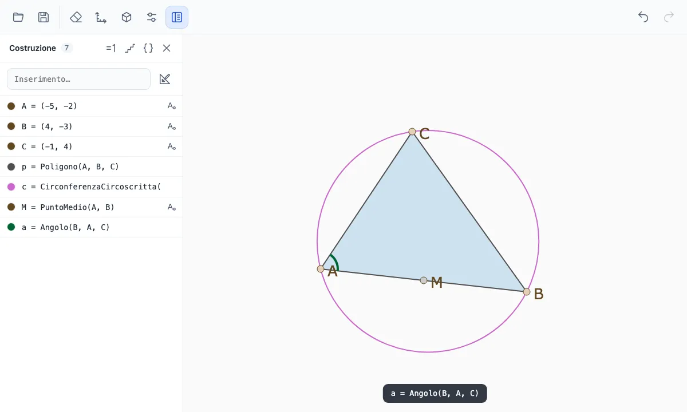
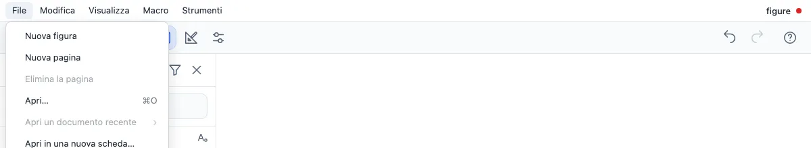

L’interfaccia

La barra dei menu

| Menu | Comandi |
|---|---|
| File | Nuova figura, Nuova scheda (cartelle di lavoro); Apri… (Ctrl O), Apri un documento recente, Apri in una nuova scheda…; Vista › Nuova vista, Elimina la vista, Sposta la vista a sinistra, Sposta la vista a destra (viste); Salva (Ctrl S), Salva con nome… (Ctrl Maiusc S), Salva la scheda con nome…; Stampa… (Ctrl P); Incorpora in una pagina web… |
| Modifica | Annulla, Ripristina, Elimina, Gomma |
| Visualizza | Assi, Vista 3D, Cronologia della costruzione, Tavolozza degli strumenti, Proprietà, Schermo intero (Esc per uscire): un segno di spunta indica ciò che è visualizzato |
| Strumenti | Manuale d’uso, DocTools, Licenza e GitHub, Informazioni… |
A destra, il nome del file della figura, in Chrome e Edge (salvare). La barra dei menu non appare quando DocGeo è integrato in un’altra pagina, come DocTools.
La barra delle azioni
| Pulsante | Funzione | |
|---|---|---|
| Apri |
.dgo, .dgp,
.ggb
|
|
| Salva | in .dgo |
|
| Gomma | nascondere o mostrare oggetti (gomma) | |
| Assi | assi e griglia; in 3D, triedro e pavimento | |
| Vista 3D | passare allo spazio o tornare al piano (3D) | |
| Tavolozza degli strumenti | pannello di destra degli strumenti (tavolozza) | |
| Proprietà | pannello di destra (proprietà) | |
| Costruzione | pannello di sinistra | |
| Annulla, Ripristina | Ctrl Z, Ctrl Maiusc Z o Ctrl Y | |
| Manuale d’uso | apre il manuale nella lingua di DocGeo, in una nuova scheda |
Al centro, la zona contestuale mostra il nome e le azioni dell’oggetto selezionato.
Il pannello «Costruzione»
-
Una riga per oggetto, nell’ordine di costruzione:
M = PuntoMedio(A, B). Ogni riga si può modificare (ridefinizione). - Il pallino a inizio riga nasconde o mostra l’oggetto; a fine riga ne mostra il nome. Quello di un punto ne ha la forma e i colori.
- ne apre la definizione nelle proprietà.
- Passando il puntatore su una riga, permette di eliminare l’oggetto e i suoi dipendenti. L’azione può essere annullata.
- Intestazione: numero di oggetti, valori, passo dopo passo, filtri.
- Riga di inserimento «Inserimento…»; sotto i 500 px di larghezza, vi si aggiunge il pulsante della tavolozza.
- Passare con il puntatore su una riga fa brillare l’oggetto, e viceversa.
Il suggerimento
Il fumetto in basso nella figura indica cosa è atteso («Seleziona un punto»), la riga che lo strumento sta per scrivere e gli errori in rosso. La sua croce ✕ abbandona lo strumento in corso.
Navigare
| Azione | Gesto |
|---|---|
| Spostare la vista | trascinare uno spazio vuoto; tasto destro ovunque |
| Zoomare |
rotellina o trackpad, attorno al puntatore pizzicare con due dita : zoom attorno al punto medio tra le dita |
| Ruotare una figura 3D | tasto destro, o un dito in uno spazio vuoto |
| Prospettiva, pavimento (3D) | P, S |
Il pulsante rotondo in basso a sinistra, presente quando la figura contiene animazioni, le mette in pausa o le riavvia.
Più viste
Come le viste grafiche di GeoGebra, una figura può essere mostrata in più viste, in colonne affiancate. La costruzione resta unica: ogni oggetto è disegnato in una vista, e tutto si aggiorna in tempo reale.
| Azione | Come |
|---|---|
| Aggiungere una vista | File › Vista › Nuova vista: una colonna in più, a destra, con le impostazioni della vista attiva; le colonne prendono la stessa larghezza |
| Attivare una vista | toccarla: una sottile barra blu ne segna il bordo superiore. Questo clic non crea alcun punto. |
| Ridimensionare | trascinare la separazione tra due colonne |
| Cambiare l’ordine | File › Vista › Sposta la vista a sinistra, File › Vista › Sposta la vista a destra |
| Eliminare | File › Vista › Elimina la vista: la vicina ne prende il posto e gli oggetti |
- Un oggetto è creato nella vista attiva, con uno strumento come con la riga di inserimento. Costruito su oggetti di un’altra vista, si appoggia sulle loro coordinate nella propria.
- Ogni vista ha le proprie impostazioni: Visualizza › Assi e Visualizza › Vista 3D, come la scheda «Figura», si applicano alla vista attiva. Una vista piana accanto a una vista 3D mostra la figura dall’alto; i suoi punti, rette, segmenti e poligoni vi compaiono solo se giacciono nel piano z = 0, come nella vista grafica di GeoGebra.
- Un cursore, una casella, un menu, un campo di input o un pulsante che supera il bordo destro della sua vista, diventata più stretta, si colloca contro quel bordo, senza perdere la sua posizione.
Queste azioni si possono annullare. Una figura GeoGebra con due viste grafiche, o la cui vista grafica è accanto alla vista 3D, si apre in due viste. Ciò che GeoGebra mostra in entrambe vi è disegnato in entrambe.
Annullare
Ogni modifica è un passo di un’unica pila: costruzione, eliminazione, spostamento, stile, impostazione del sistema di riferimento, passaggio al 3D. Zoom, spostamento e rotazione della vista non lo sono.
I pannelli
- Il loro bordo interno si trascina per ridimensionarli; un doppio clic ripristina la larghezza predefinita.
- Sotto i 900 px di larghezza, è aperto un solo pannello alla volta; a 600 px e meno, il pannello «Costruzione» parte chiuso, le proprietà coprono la figura e la scelta di uno strumento chiude i pannelli.